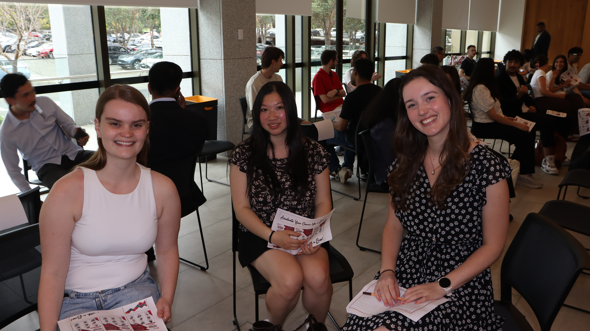

MQBS3010 Capstone · Client: The King's Foundation · SDG 4
Relevant Coursework
Mid-semester, our client requested a presentation pitching our Hillview Estate proposal within one week. Working under a tight deadline, our interdisciplinary team divided responsibilities according to individual strengths, coordinated through Microsoft Teams and developed a cohesive, client-ready presentation aligned with The King's Foundation's branding.
The experience challenged us to respond quickly to changing client expectations while maintaining professional standards.
From MQBS3010Agility Challenge · Week 6
1 / 3 · The project
A client deck in a fortnight
Mid-semester, our client's management asked for an immediate slide deck pitching our Hillview Estate idea, built to their brand, colours and styles like a real tender. Our team divided the deck by expertise, coordinated everything in Microsoft Teams, and delivered on deadline.
Slides I created
Developed a stakeholder map to prioritise key groups based on their power and interest, translating stakeholder analysis into a clear, visually engaging framework.Segmented the target market by demographic, geographic, psychographic and behavioural characteristics, prioritising underserved and low-income families, boys and first-time participants to support inclusive participation and the program's SDG goals.Developed three personas, an aspiring dancer, a curious beginner and an anxious parent, to map each group's motivations, barriers and digital needs, so the marketing approach addresses real barriers like cost.
My contribution:
Created the stakeholder map, identifying key stakeholders and aligning the visual design with the client's branding to support clear, professional communication.
How we worked together
Our team had a short time to prepare a presentation for our client. We divided the work based on everyone's strengths and used Microsoft Teams to share updates and keep track of our progress.
Plan
We divided the slides based on each person's strengths and agreed on what needed to be done.
Build
We worked on our own slides and used Microsoft Teams to share progress and keep the design consistent.
Deliver
We brought our slides together, checked the presentation and made sure it was ready for the client.
Skills & Personal Growth
The Agility Challenge strengthened my ability to
work collaboratively, adapt to changing requirements
and communicate business insights effectively.
Stakeholder Management
Developing the stakeholder map taught me to assess
competing interests and prioritise engagement
to support informed decisions.
Collaboration & Adaptability
Responding to a short-notice client request
strengthened my ability to manage responsibilities,
meet deadlines and adapt to changing priorities.
Visual Business Communication
Designing the stakeholder map reinforced the
importance of presenting complex information
through clear, purposeful visuals.
Reflection & Future Application:
Initially, I focused on producing an accurate and visually
polished stakeholder map. However, I recognised that
effective business communication is ultimately about
delivering relevant insights, not simply presenting information.
Working under a tight deadline also highlighted the
importance of balancing attention to detail with efficiency.
Moving forward, I aim to prioritise high-impact tasks,
seek feedback earlier and evaluate my work based on
how effectively it supports business decisions.
From MQBS3010Capstone Project · Weeks 3–10
1 / 3 · The project
A business proposal for Hillview Estate
Our team was given a hypothetical $1 million budget to develop a sustainable business idea for Hillview Estate, a heritage property in the Southern Highlands.
We proposed the Ballet Program at Hillview Estate (BPHE), offering affordable $10 ballet classes to make arts education more accessible to local children.
The program aimed to support SDG 4: Quality Education and SDG 10: Reduced Inequalities, while generating enough income to remain financially sustainable.
Each team member wrote an individual chapter based on their area of study, combining our different perspectives into one business report.
Segmentation framework from my chapter, defining a primary market of local children aged 5–17 and prioritising underserved families, boys and first-time participants, so every marketing decision could be traced back to the program's inclusion goals.Customer journey map showing the different touchpoints and experiences throughout the program.
My contribution: My chapter focused on market research, customer segmentation and marketing strategy, exploring how the program could reach families and encourage enrolment.
How we worked together
Our interdisciplinary team combined expertise from different business majors to develop a sustainable proposal for Hillview Estate. Each member researched their area of specialisation, and we brought our findings together to create one cohesive business report.
Research
Each member researched their area of expertise. I focused on customer segmentation, market research and marketing strategy.
Collaborate
We shared findings and discussed how our recommendations would support the program's goals and financial sustainability.
Integrate
We combined our individual chapters into one report, connecting our marketing, financial and operational recommendations.
Skills & Personal Growth
Developing the Hillview Estate business proposal strengthened
my ability to research customer needs, evaluate business
decisions and collaborate across different disciplines.
It also helped me understand how marketing strategies
must align with wider business goals.
Developing customer personas and a journey map taught me
to consider different customer needs and identify barriers
to participation, rather than assuming all families
would respond to the same marketing approach.
Commercial Awareness
I learned that a marketing strategy must balance attracting
customers with keeping costs manageable. This challenged
me to think beyond promotional ideas and consider the
financial sustainability of the program.
Interdisciplinary Collaboration
Working with students from different business majors
showed me how marketing, finance and operations influence
one another. I learned to consider other perspectives
when developing recommendations.
Reflection & Future Application:
Initially, I approached the project mainly from a marketing
perspective. However, I realised that effective business
recommendations need to consider the organisation as a whole.
In future projects, I want to seek input from other
disciplines earlier and evaluate my ideas against both
customer needs and commercial objectives.
From MQBS3010Networking event · Week 10
Accelerate Your Career

At the Accelerate Your Career networking event, I had the opportunity to speak with industry professionals in a round-robin format. I prepared questions about their career experiences, graduate opportunities and advice on improving job applications. The event provided valuable insights into employer expectations and career development.
Before
Prepared questions to ask industry professionals about their career experiences and advice on improving job applications.
During
Listened to industry guests, asked questions and learned about their experiences working in different industries.
After
Connected with industry professionals on LinkedIn and considered how to apply their advice to future job applications.
“Look beyond the job description, as there’s often more to a role than what’s written on paper.”


.png)